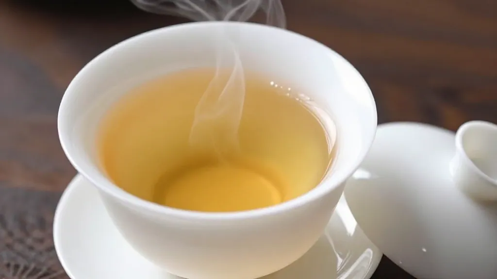

一、大赛消息传到凤凰镇
九月中旬嘅凤凰山，晨雾未散，阿凤姐已经系茶铺门口支起张竹椅，手捧一杯通天香，慢慢啜饮。佢今年五十三岁，系凤凰镇地地道道嘅第三代茶农，屋企喺乌岽山有块茶地，种咗几株过百年嘅老枞。
「阿凤姐！阿凤姐！」隔壁档口做茶叶包装嘅老陈，气喘吁吁咁跑过来，「你睇手机未？潮州那边搞紧个茶具、茶器、茶包装设计大赛！9月10号截止投稿！」
阿凤姐放下杯，眉头一挑：「乜大赛？边个搞嘅？」
「市工信局主办，全国征集作品！话系要擦亮凤凰单丛区域公用品牌，推动茶产业同工艺设计、文化创意深度融合。」老陈将手机递过去，「你睇，要求作品要融入潮州经典元素，好似广济桥、牌坊街、潮绣、木雕呢啲，仲要贴合年轻化、休闲化、健康化嘅消费趋势。」
阿凤姐睇住屏幕，半晌冇出声。佢忽然叹咗口气：「老陈啊，我哋做咗几十年茶，包嘢仲系红纸绿纸、铁罐木盒，后生仔睇到都觉得老土。今次呢个比赛，唔系啱晒我哋嘅软肋？」
老陈点点头：「系啊，我前几日有个深圳嘅客户嚟揾我，话想买啲凤凰单丛做中秋礼送客户，但系转咗几圈都揾唔到啲靓包装。佢话市场上嘅单丛礼盒，十个有九个好似同一个模印出嚟，千篇一律，冇灵魂。」
二、阿凤姐嘅回忆
阿凤姐站起身，行入茶铺后边嘅仓库，指住墙角堆住嘅几箱旧包装：「你睇呢啲，十年前印嘅，红底金字，龙凤呈祥，当时我哋觉得好威水。但系依家？送人都要被人笑out！」
佢讲起细个时候，阿爷做茶卖茶，从来冇包装讲究。有客嚟，阿爷从灶底摸出个粗陶罐，抖出啲茶叶，用旧报纸一卷就系。但系嗰阵时嘅茶叶唔使讲包装，因为凤凰单丛嘅名声本身就系招牌。
「以前系『皇帝女唔忧嫁』，」阿凤姐苦笑，「依家？全国产茶区个个都搞品牌、搞电商、搞直播，鸭屎香都成咗网红茶饮嘅茶底，我哋嘅凤凰单丛虽然品质好，但系讲到包装、讲到设计、讲到文化输出，真系落后人一截。」
老陈补充：「而且你知唔知？2026年凤凰单丛茶嘅年产值已经破咗25亿元，种植面积7万多亩，年产茶叶超过1000万斤。但系你估下，咁大嘅产量，有几多系靠品牌化、高附加值卖出嘅？多数仲系卖毛茶、卖原料，利润薄到贴地。」
三、茶山的新变化
第二日，阿凤姐上咗乌岽山睇茶地。路上遇到后生仔阿杰，系棋盘村人，今年廿几岁，搞紧无人机送茶青嘅生意。
「凤姐！早啊！」阿杰操控住部无人机，从山顶吊运住筐新鲜茶青，精准降落到山脚装车点。
阿凤姐仰头望住嗰部嗡嗡飞嘅无人机，感慨道：「阿杰，以前我哋细个系咪见过呢啲？以前采完茶青，要用人力肩挑背扛落山，一担百几斤，走一个钟。依家呢，五分钟就到山脚，仲新鲜过即时摘嘅！」
「系啊，」阿杰收起遥控器，「而且棋盘村嗰啲智慧天眼更劲，14个镜头24小时监控茶园，土壤湿度、温度、光照，手机一睇就知。以前种茶靠天、靠经验，依家种茶靠数据。」
阿凤姐蹲下，拨开茶树底下嘅杂草，露出绿油油嘅广金钱草：「国家茶叶产业技术体系专家话，呢种草能治草、肥土、护茶，减少农药化肥使用。你睇，我哋以前乱施肥、乱喷药，依家都知道要搞生态种植，有机肥料、粘虫板、杀虫灯，样样讲究。」
四、中秋将至，茶礼焦虑
落山嗰阵，阿凤姐接到个电话，系广州做电商嘅侄子阿强打来嘅。
「姑姐，今年中秋又快到了，你知唔知？今年中秋节系9月25号，我哋网店里嘅凤凰单丛中秋礼盒订单已经开始多咗。但系——」阿强停顿咗下，「客户反馈最多嘅就系两个字：老土。」
阿凤姐边行边问：「客户想要咩样嘅？」
「佢哋要啲有潮州特色嘅、有设计感嘅、年轻人都钟意嘅包装。有人提议用广济桥剪影做茶罐图案，有人想要潮绣纹理嘅泡袋，仲有人提议搞可降解环保材料。但系姑姐，我哋镇上有几个厂做得出呢啲？全部都系做传统铁罐、纸盒嘅。」
阿凤姐想起个设计大赛：「阿强，潮州而家搞紧个茶具、茶器、茶包装设计大赛，征集全国嘅设计师。如果有一班真正识设计、识文化嘅后生仔，帮凤凰单丛量身定做一套新形象，你话系咪好正？」
「绝对正！」阿强兴奋起来，「而且姑姐你知唔知？依家全国已经有『鸭屎香柠檬茶』『鸭屎香奶茶』呢啲网红饮品，凤凰单丛喺年轻人里面嘅认知度其实好高。缺嘅就系一个能匹配佢哋审美嘅包装设计，同埋一个能讲好故事嘅品牌表达。」
五、阿凤姐嘅期盼
翻到自己茶铺，阿凤姐重新坐低，冲咗杯鸭屎香。茶汤金黄透亮，银花香气幽幽升起。
佢忽然明白咗：凤凰单丛唔单止系一杯茶，佢背后系潮州工夫茶嘅文化、系凤凰山嘅云雾水土、系几代茶农嘅心血。而包装同设计，就系将呢啲无形嘅价值，变成消费者睇得到、摸得着、愿意埋单嘅载体。
「潮州有陶瓷产业、有印刷产业、有非遗技艺，广济桥、牌坊街、潮绣、木雕样样都系宝。」阿凤姐自言自语，「但系呢啲宝贝一直都系分散嘅，未真正同茶产业串埋一齐。今次个大赛，话唔定就系一个契机。」
老陈又嚟咗，听到阿凤姐嘅话，接嘴道：「我听讲评审会从文化内涵、创新创意、实用价值、艺术呈现四大维度评分，金奖作品仲有机会量产落地。如果真系有设计师用潮州元素做出一套令年轻人眼前一亮嘅凤凰单丛包装，我老陈第一个下单！」
阿凤姐笑咗：「你下单？你唔系做包装嘅咩？系咪惊人哋抢你生意？」
「嗱，竞争先至有进步嘛！」老陈挠挠头，「其实我早就想转型，但系一个人之力有限。如果有大赛带动，有成个设计圈嘅人关注凤凰单丛，我哋本地嘅包装厂、陶瓷厂、印刷厂全部受惠，呢啲就叫产业协同！」
六、一杯茶，一条路
黄昏时分，阿凤姐独自站喺茶铺门口，望住远处凤凰山嘅轮廓。山间云雾缭绕，几缕阳光穿透云层，照得茶园绿油油一片。
佢想起阿爷讲过嘅话：「做茶如做人，要经得起焙火。」凤凰单丛嘅制作，从采青、晒青、晾青、浪青、发酵、炒青、揉捻到烘焙，每道工序都考验制茶人嘅经验同耐性。三道焙火，褪去青涩，留下醇厚。一个产业嘅发展，又何尝唔系如此？
从「靠天吃饭」到「数据驱动」，从「熟人经济」到「品牌经济」，从「原料出口」到「文化输出」——凤凰单丛正经历住一场深刻嘅蜕变。而2026年呢场茶具茶器茶包装设计大赛，可能就系其中一道关键嘅「焙火」。
中秋将近，阿凤姐决定今年送出去嘅茶礼要换一种新面貌。佢暗暗打算，如果大赛结果出炉，一定要第一时间联系获奖设计师，帮自己屋企嘅老枞单丛设计一套真正属于凤凰山、属于潮州、属于呢个时代嘅包装。
「一杯好茶，要配好器；一个好品牌，要配好设计。」阿凤姐举起手中杯，对住夕阳轻声说道，「凤凰单丛嘅新路向，可能就喺呢度起步。」
茶汤见底，余香满口。窗外，凤凰山嘅云雾又浓咗起来，似系要遮住什么，又似系要孕育什么。阿凤姐知道，变天嘅时候，往往就系新茶最香嘅时候。
（本文基于2026年9月潮州正式启动茶具、茶器、茶包装设计大赛之真实行业热点撰写，融入凤凰单丛年产值破25亿元、智慧茶园建设、中秋茶礼旺季等行业背景。）